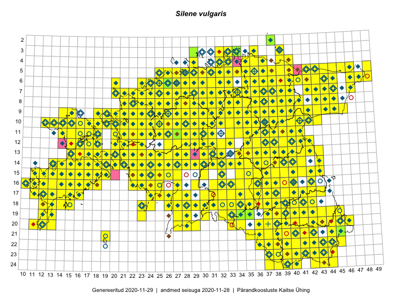

Silene vulgaris
Uuendatud: 2016-12-02
Kaardile koondatud taksonid: Silene vulgaris (Moench) Garcke

Kaart põhineb 710 vaatlusel. Taksonit on leitud 424 ruudust.
Kuvatud viited 20 esimesele andmebaasikirjele, ülejäänud PlutoFis
- Malle Leht: 2015-07-09: : ala
- Toomas Kukk, Eerik Leibak: 2015-08-09: 13-15: ala
- Thea Kull: 2015-07-07: 16-40: ala
- Rein Kalamees: 2015-06-05: 05-32: ala
- Toomas Kukk, Eerik Leibak: 2015-08-09: 14-15: ala
- Toomas Kukk, Eerik Leibak: 2015-08-08: 15-18: ala
- Toomas Kukk, Thea Kull, Timo Luhamäe, Ott Luuk, Peedu Saar: 2015-06-28: 13-26: ala
- Toomas Kukk, Eerik Leibak: 2015-08-10: 13-15: ala
- Rein Kalamees, Kersti Püssa: 2015-08-04: 03-33: ala
- Tiit Hallikma, Toomas Kukk: 2015-07-21: 05-45: ala
- Ott Luuk, Toivo Sepp: 2015-07-29: 09-31: ala
- Peedu Saar, Ott Luuk: 2015-06-21: 14-41: ala
- Ott Luuk, Peedu Saar: 2015-07-27: 11-35: ala
- Rein Kalamees, Kersti Püssa: 2015-05-28: 21-45: ala
- Peedu Saar, Elle Roosaluste: 2015-07-12: 13-20: ala
- Peedu Saar: 2015-07-14: 15-38: ala
- Peedu Saar: 2015-07-15: 15-39: ala
- Ott Luuk, Peedu Saar: 2015-08-13: 24-43: ala
- Tiit Hallikma, Toomas Kukk: 2015-07-22: 05-49: ala
- Peedu Saar, Ott Luuk: 2015-07-27: 10-35: ala